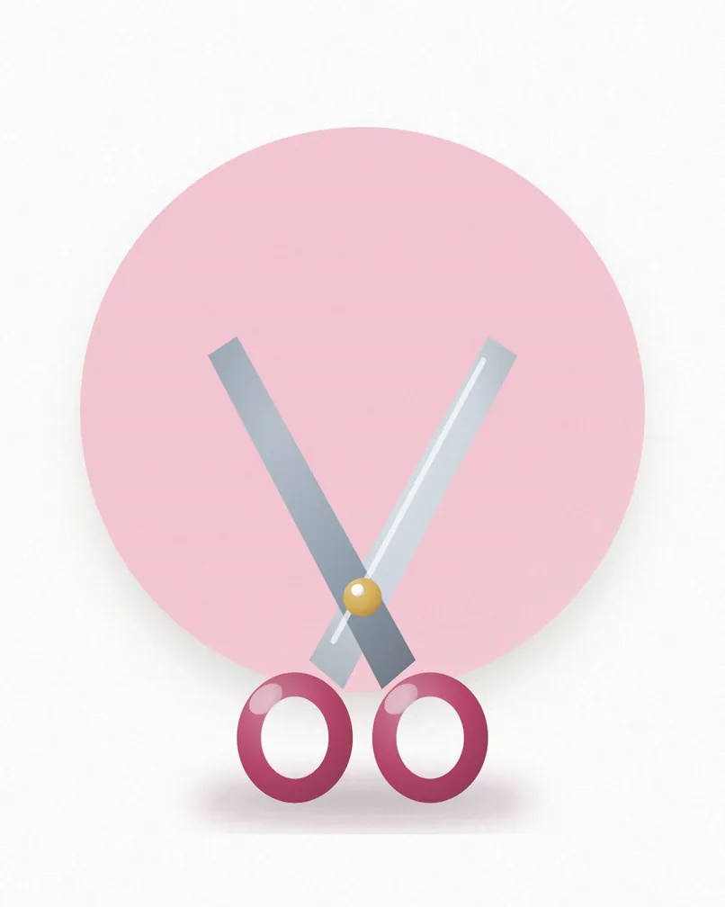

Cut and finish
from £42 · 60 minA consultation, a wash, a precision cut and a blow-dry you can recreate at home.
Prices start from the amount shown. Tell us about your hair or skin and we will quote exactly. Patch tests are needed for colour and some tints.
Cuts, colour and finishes by a team that listens first.

A consultation, a wash, a precision cut and a blow-dry you can recreate at home.
Rich, even all-over colour with a glossing treatment for shine.
Hand-painted, sun-kissed highlights that grow out softly.
Smooth, bouncy or sleek. Ideal before a party or a big day.
Long-lasting colour, clean finishes and a little bit of art.

Shape, cuticle care and two weeks of chip-free colour.
A soothing soak, a gentle buff and a polish that lasts.
Hand-painted designs, chrome, French or glitter. Bring a picture.
Keep your extensions looking fresh between full sets.
Skin, lashes, brows and make-up for everyday and special days.

A deep cleanse, exfoliation and a hydrating mask. Skin looks fresh straight away.
Curled, darker lashes for weeks. No mascara needed.
Shaped to your face and tinted for a soft, defined finish.
Polished, long-wearing make-up for dinners, parties and photos.
Streak-free sunless tanning that looks like you, on a good day.

A natural colour in minutes, in a shade chosen for your skin tone.
Hydrating, longer-lasting colour with a subtle luminous finish.
A spray tan with a brow tidy and a quick manicure.
Refresh your colour between full tans, within seven days.
Tell us what you would like and we will confirm your appointment within a day.
| Monday to Friday | {{hours_weekdays}} |
|---|---|
| Saturday | {{hours_saturday}} |
| Sunday | {{hours_sunday}} |